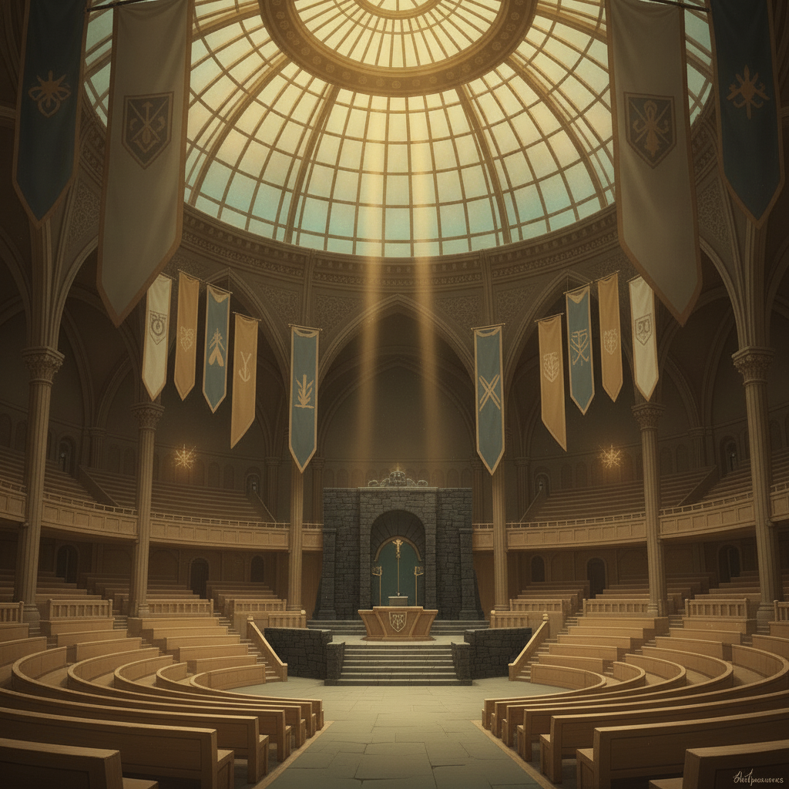
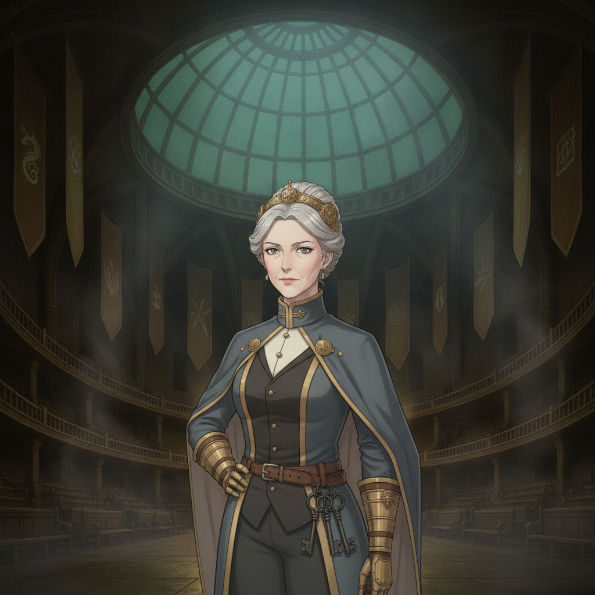
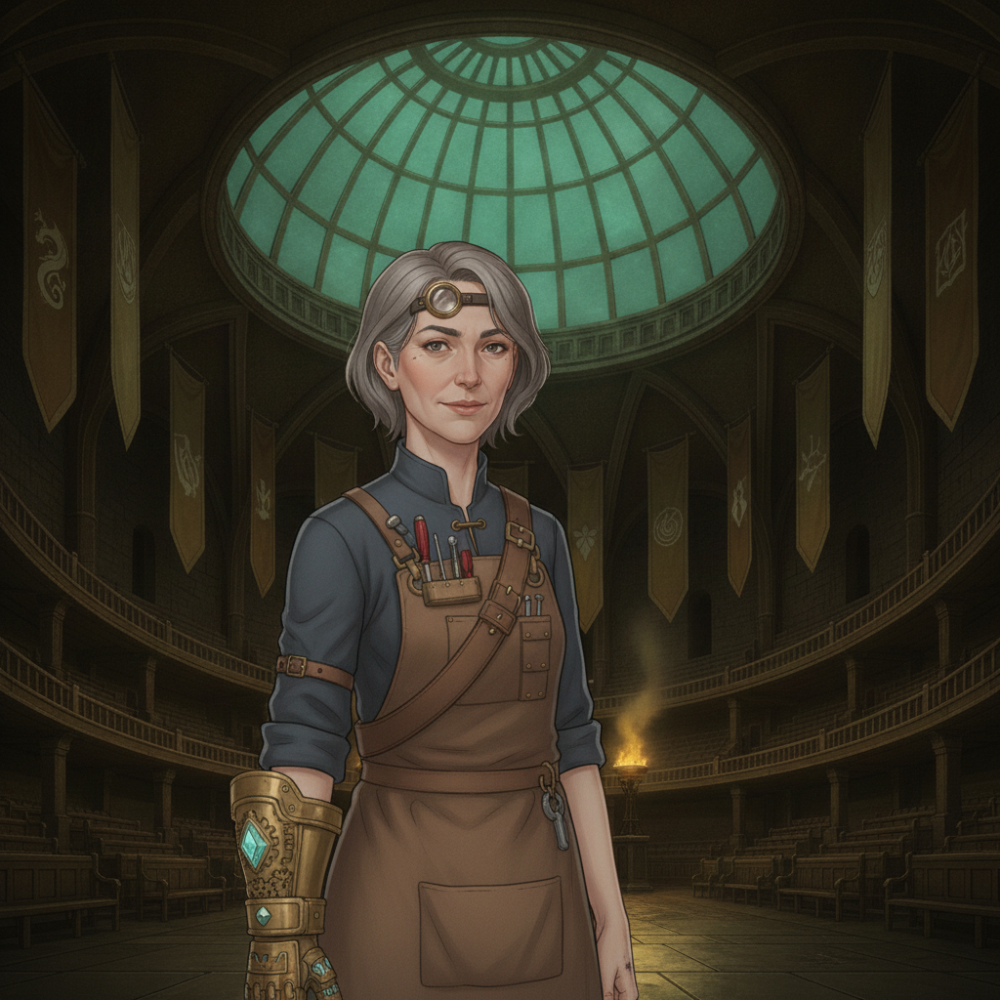

The Great Assembly Hall is grim and hushed. Headmistress Coyle stands at the rostrum, flanked by the professors, their faces etched with a terrible urgency.

Auria Coyle“Students, the geopolitical situation has deteriorated catastrophically. The Governors have fallen silent. Strategic weaves, once thought impossible, are being deployed.”

Professor Mirabel Quist“Training will intensify. You are no longer merely students; you are the last line. Every skill you have acquired will now be tested in ways we had hoped you would never know.”
Panic ripples through the cohort. The carefree days of the college are over, shattered by the weight of a world breaking apart.